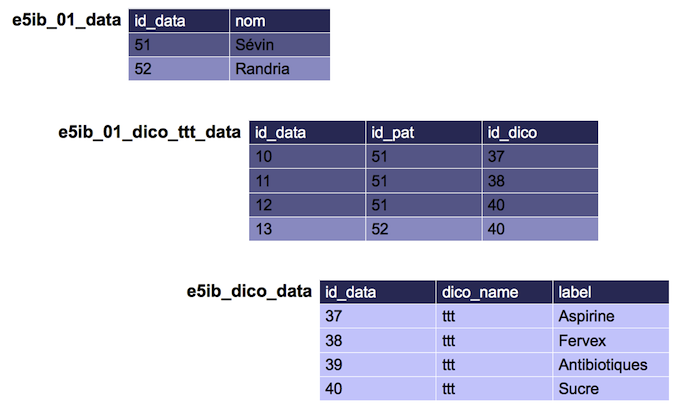

Description
Le VarSet correspond au questionnaire de Voozanoo3. Ce XML est utilisé pour définir les variables contenues dans le VarSet.
Exemple:
<varset name="patient" prefix="pat" type="std" label="Patient">
<!-- Ces variables font partie du varset_head (Cf en bas de page) -->
<!-- var id="id_data" type="primary_key"/ -->
<!-- var id="id_data" type="integer" mandatory="true" / -->
<var uid="1" id="nom" type="string" default_label="Nom du patient" default_short_label="Nom">
<string length="50"/>
</var>
<var uid="2" id="prenom" type="string" default_short_label="Prénom">
<string length="50"/>
</var>
</varset>
Important
Depuis la version 2.14 les attributs prefix, type et label sont obligatoires. Ils sont utilisés pour peupler les champs de la table *_pj_varset lorsqu’on utilise le gestionnaire
de ressources pour modifier le varset.
name : permet d’identifier le varset, il doit être unique.
prefix : est utilisé dans le nom table liée à ce varset (Ex : *_pat_data, *_med_data), il doit être unique.
type : permet d’identifier le type du varset.
std : Varset standardjoin : Varset de jointure (relation n-n entre deux varsets)sys : Varset système (Ne doit normalement pas être éditable par un utilisateur)
label : est le libellé du varset
Pour chaque variable les attribus obligatoires sont :
uid : Abbréviation de Unique Id cet attribut permet d’identifier cette variable durablement, afin de gérer un ajout, une suppression de variable ainsi qu’une modification de nom de variable (contenu dans id)id : Identifiant de la variable (utilisé comme nom de colonne dans la base de données)type : Type de la variable (Cf Types)
Pour les autres attributs : Options globales
Types
primary_key
Le type primary_key permet de définir la clé primaire du varset. Aucun paramètre supplémentaire n’est nécessaire.
<var id="id_data" type="primary_key"/>
Caution
Vous n’avez pas à inclure cette variable dans votre varset, c’est le role du varset_head. Le fait de l’inclure dans votre Varset produira une erreur sql (Duplicate column).
fkey_varset
Le type fkey_varset sert à définir un clé étrangère vers un autre varset.
<var uid="1" id="id_commune" type="fkey_varset">
<fkey_varset varset_name="commune"/>
</var>
varset_name : nom du varset sur lequel effectuer la jointure. Le système fait la jointure automatiquement sur la variable id_data de l’autre varset.
Note
GSA - 23/12/2013 : Je pense que ce noeud est déprécié et plus utilisé
Dans le varset cible (ici commune), il est possible d’ajouter une balise “relation”. Cette balise doit permettre au varset de savoir qu’il y a une relation sur lui.
<relation varset_name="patient" var_id="id_commune"/>
fkey_dico
Le type fkey_dico sert à définir une clé étrangère vers un dictionnaire du varset dico qui est présent dans chaque projet.
<var uid="1" id="sexe" type="fkey_dico">
<fkey_dico dico_name="sexe"/>
</var>
dico_name : nom du dictionnaire dans la table des dictionnaires
fkey_dico_ext
Le type fkey_dico_ext permet d’avoir une relation N-N avec un dictionnaire (correspond aux cases à cocher dans voozanoo3).
<var uid="1" id="ttt" type="fkey_dico_ext">
<fkey_dico_ext dico_name="ttt"/>
</var>
dico_name : nom du dictionnaire
Ce type a besoin d’une table dédiée à la jointure (une table par jointure).
<varset name="pat_ttt" prefix="01_dico_ttt" type="std" label="Réponses Patient-Traitement" >
<var uid="1" id="id_pat" type="integer"/>
<var uid="2" id="id_dico" type="integer"/>
</varset>
Le nom du varset est défnie selon la nomenclature suivante: (N° varset)_dico_(Nom variable). Ex: 01_dico_ttt ce qui donne e5ib_01_dico_ttt_data pour la table des données.
Hint
Il n’est pas utile d’avoir des droits sur ce type de table, donc pas de table group et group_mode.

Dans le xml dataquery, on récupère les colonnes de type fkey_dico_ext de la même manière que les autres colonnes :
<column_simple field_name="ttt" table_name="p"/>
En revanche les données sont renvoyées sous forme d’un tableau ( voir la page de définition du XML de dataset ).
Exemple de représentation de la données dans le XML de dataset:
<mutiple name="ttt">
<value>37</value>
<value>38</value>
<value>40</value>
</multiple>
fkey_sys_dico
Ce type est utilisé pour lier une variable à un dictionnaire système (table sys_dico_data).
Hint
Un dictionnaire système est commun à tous les projets de l’application.
Il est également indendique d’une application à une autre (propre au noyau Voozanoo4).
Le comportement est similaire au type fkey_dico
<var uid="1" id="user_status" type="fkey_sys_dico">
<fkey_sys_dico dico_name="user_status"/>
</var>
fkey_sys_dico_ext
Similaire au type fkey_dico_ext excepté que c’est une dictionnaire système qui est pointé.
<var uid="1" id="foo" type="fkey_sys_dico_ext">
<fkey_sys_dico_ext dico_name="bar"/>
</var>
fkey_varset_ext
Le type fkey_varset_ext est utilisé pour définir des relations de type N-N avec un autre varset.
Dans l’exemple ci-dessous nous décrivons une relation de type N-N entre le varset “patient”, et le varset “bilan”.
<varset name="patient" prefix="01" type="std" label="Patient">
<var uid="1" id="id_bilan" type="fkey_varset_ext">
<fkey_varset_ext varset_relation_name="pat_bil" varset_name="bilan"/>
</var>
</varset>
<varset name="bilan" prefix="02" type="std" label="Patient">
<var uid="1" id="id_patient" type="fkey_varset_ext">
<fkey_varset_ext varset_relation_name="pat_bil" varset_name="patient"/>
</var>
</varset>
<varset name="pat_bil" prefix="01_02" type="join" label="Jointure Patient-Bilan">
<var uid="1" id="id_patient" type="integer"/>
<var uid="2" id="id_bilan" type="integer"/>
</varset>
Le varset “pat_bil” représente la table de jointure entre les deux varsets.
fkey_table - Non implémenté
Le type fkey_table permet de faire une jointure sur une table de la base de données.
Important
En date du 08/08/2013 je n’ai trouvé aucune référence à ce type, je ne pense pas qu’il soit implémenté - GSA
<var uid="1" id="id_patient" type="fkey_table">
<fkey_table table_name="e5y7_01_data" key_name="id_data" multiple="false|true"/>
</var>
fkey_ws - Non implémenté
Important
Ce type est purement théorique à l’heure actuelle (2013-08-08), aucune implémentation technique n’a été faite.
Le type fkey_ws permet de lier une variable à un webservice.
<var uid="1" id="commune" type="fkey_ws">
<fkey_ws uri="https://..." multiple="false|true"/>
</var>
uri
- multiple
- false: jointure de type 1-n.
- true: jointure de type n-n.
string
Chaine de caractère
<var uid="1" id="nom" type="string">
<string length="50"/>
</var>
length : longueur maximale de la chaine.
Note
Cette longueur est utilisée lors de la représentation du champ à l’écran, elle limite également la saisie utilisateur à N caractères.
La colonne SQL de la table correspondante aura également cette longueur : VARCHAR(N)
integer
Entier
<var uid="1" id="taille" type="integer">
<integer min="10" max="220"/>
</var>
min : valeur minmax : valeur max
Note
Les min et max fournis sont utilisés pour contrôler la saisie utilisateur.
Le max est utilisé pour la colonne SQL de la table correspondante : INT(N)
float
Nombre avec décimales
<var uid="1" id="temperature" type="float">
<float min="35" max="45" accuracy="2"/>
</var>
min : valeur minmax : valeur maxaccuracy : nombre de décimales possibles (précision)
Note
Tout comme le type integer les min et max sont utilisés pour contrôler la saisie utilisateur.
La colonne SQL générée sera de type DECIMAL en MySQL (Voir la documentation officielle).
Exemple : min = 0, max = 999, accuracy = 2 donnera une colonne DECIMAL(5, 2) pouvant stocker les flottants tels que 532,87 ou 787,01.
date
Date
<var uid="1" id="ddn" type="date">
<date min="1900-01-01" max="2010-12-31"/>
</var>
min : valeur minmax : valeur max
Note
Les valeurs min et max doivent être données au format SQL : YYY-MM-DD.
time
Heure
<var uid="1" id="depart" type="time">
<time min="08:30:00" max="19:00:00"/>
</var>
min : valeur minmax : valeur max
Note
Les valeurs min et max doivent être données au format SQL : HH:ii:ss.
datetime - Implémenté partiellement
Date/Heure
Note
Ce type de variable n’est implémenté que partiellement, le rendu graphique se fait actuellement comme un champ Date simple.
<var uid="1" id="date_creation" type="datetime">
</var>
text
Text multi-ligne
<var uid="1" id="commentaire" type="text"/>
boolean
Booléen
<var id="enabled" type="boolean"/>
Caution
La valeur par défaut doit être 1/0 (et non pas true/false)
Options globales
Ces options sont applicables à tous les types, exceptés les types primary_key et foreign_key.
<var
uid="1"
id="ddn"
type="date"
mandatory="true"
default_label="Date de naissance"
default_short_label="DDN"
default_value="curdate()"
/>
mandatory (true|false) : variable obligatoiredefault_label : libellé de la variabledefault_short_label : libellé court, utilisé par exemple pour les en-têtes de colonne dans les tableaux.default_value : valeur par défaut. Les règles sont celles de MySQL à une exception, celle des fonctions:
http://dev.mysql.com/doc/refman/5.0/fr/create-table.html
Une valeur DEFAULT doit être une constante, ça ne peut être une fonction ou une expression.
Hint
Voozanoo4 autorise cependant l’utilisation de mot clés faisant référence à certaines fonctions SQL (SQL standard) :
- Now() : Affectera la date courante à la variable
Validateurs
Il est possible de spécifier un validateur par variable (question). Pour cela il faut rajouter un attribut validator au noeud enfant du noeud <var></var> :
<varset name="patient" prefix="01" type="std" label="Patient">
<var uid="1" id="email" type="string" default_label="Adresse email" default_short_label="Email">
<string length="100" validator="email" />
</var>
</varset>
Il est également possible de rajouter une attribut regexp au même noeud afin d’activer la validateur par expression régulière.
<varset name="commune" prefix="99" type="std" label="Commune">
<var uid="1" id="cp" type="string" default_label="Code postal" default_short_label="CP">
<string length="100" regexp="^[0-9]{5}$" />
</var>
</varset>
Note
Ce validateur peut se cumuler à un validateur “classique” (Attribute validator et regexp).
Pour plus d’informations consultez la documentation sur les Validateurs.
Libellés
Warning
Cela reste A discuter/Valider. Actuellement aucun noeud <label> est compris par la système.
De plus un système d’internationalisation est déjà en place (Voir partie Internationalisation (I18N)).
Ajouter les libellés des variables dans le XML (y compris les traductions).
<varset name="patient" prefix="01" type="std" label="Patient">
<var uid="1" id="nom" type="string" mandatory="true" default_label="Nom">
<string length="50"/>
<label lang="en" value="Lastname"/>
</var>
<var uid="1" id="prenom" type="string" mandatory="true" default_label="Prénom">
<string length="50"/>
<label lang="en" value="Firstname"/>
</var>
</varset>
varset_head
Le rôle du varset_head est de regrouper les variables qui sont communes à tous les varset. Il s’agit des variables d’environnement.
Il s’agit d’un fichier Xml présent coté Core qui est “fusionné” avec le Xml de varset définit par l’utilisateur. Il est présent dans /src/library/Resource/XML/varset_head.xml.
<varset_head>
<var id="id_data" type="primary_key" />
<var id="id_owner" type="integer" mandatory="TRUE" />
<!-- [...] -->
</varset_head>
TODO Lister les variables d’environnement